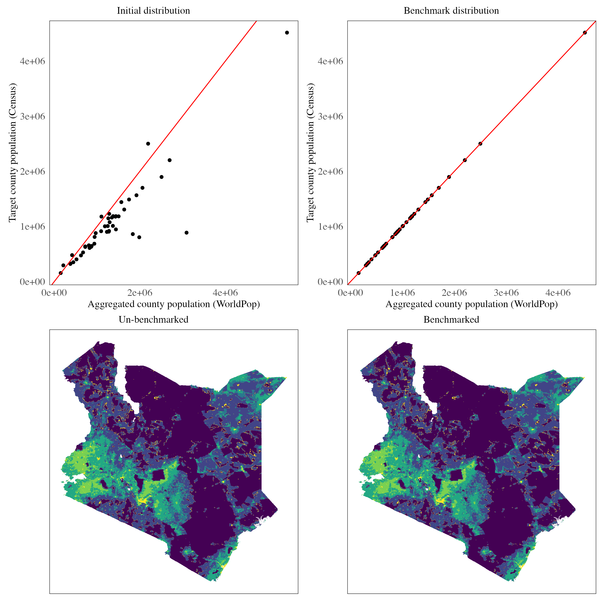
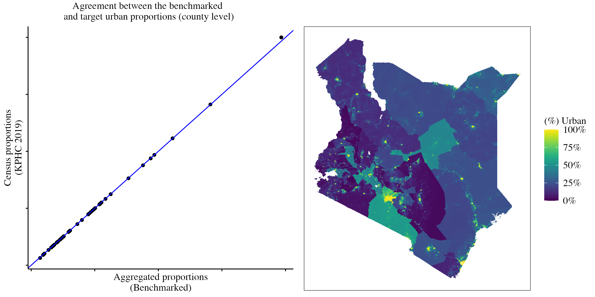
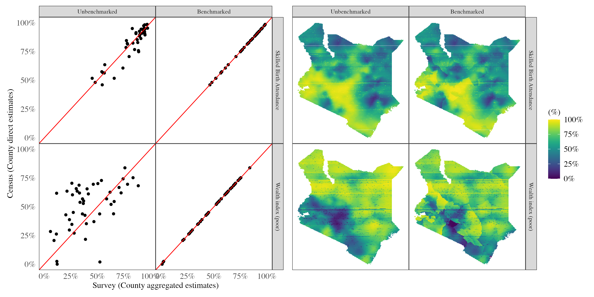

Introduction
Model-based small area estimation (SAE) relies on statistical models that incorporate covariate information and/or data from neighboring areas to enhance the precision of estimates in specific locations. These methods are particularly valuable when domain samples are too small to provide reliable direct estimates. However, the reliance on models makes SAE susceptible to estimation errors, often due to model misspecification, which can lead to discrepancies between model-based estimates and those from more authoritative sources such as censuses or vital statistics. Benchmarking addresses these issues by aligning small area estimates derived from survey data with established benchmarks (direct estimates from more credible sources) to ensure consistency and accuracy in aggregated results (Pfeffermann, 2013). This process is critical for producing reliable estimates that support informed policy decisions and resource allocation.
Benchmarking plays a crucial role in small area estimation for several reasons. First, policy makers often require estimates from various sources to align for consistent decision-making, particularly when allocating resources. Second, researchers/analysts may seek to enhance estimates by integrating data from multiple sources, which benchmarking facilitates. Benchmarking can be categorized into two types: internal and external. Internal benchmarking involves using estimates at higher aggregation levels to calibrate those at lower levels—for example, ensuring that sub-county estimates, when aggregated, match county-level estimates derived directly from survey data. External benchmarking, on the other hand, relies on direct estimates from authoritative sources such as censuses and vital statistics to calibrate model-based estimates.
Several approaches to benchmarking exist in the literature. Classical methods use a two-stage process: constructing a small area model to generate estimates, followed by calibrating these estimates to match benchmark values. However, these methods often provide only point estimates without uncertainty measures. Advanced methods incorporate benchmark constraints directly into the estimation process, using informative priors or likelihood terms, thereby producing full posterior distributions for benchmarked estimates. These approaches are gaining importance due to their ability to provide uncertainty measures for benchmarked estimates (Zhang & Bryant, 2020).
In this article, we focus on calibrating gridded surfaces provided by institutions like the United Nations, as well as gridded surfaces obtained from unit-level SAE models derived from the Demographic and Health Surveys. The objective is to adjust unit-level estimates so that their aggregation aligns with direct estimates from census data. Unlike the usual benchmarking aimed at larger geographic units, our approach operates at a fine spatial resolution of \(5 \ km^2\). These gridded surfaces are particularly valuable for spatial and spatio-temporal modeling, including unit-level SAE models and prevalence mapping, where high-resolution covariates are needed.
Data
The primary dataset used in this study is the United Nations Gridded Population Surface obtained from WorldPop (WorldPop & CIESIN, 2018). This dataset has a spatial resolution of approximately \(1 \ km^2\) and was developed using methods that incorporate covariates related to population density, such as land cover, road networks, and other environmental factors. Dasymetric redistribution techniques were applied to create pixel-level population density estimates that align with the national population totals provided by the United Nations Population Division (Stevens et al., 2015). Although the gridded population surface is designed to match national totals, our focus is on benchmarking these estimates against (sub-national) county-level totals to ensure that the aggregated estimates accurately represent county-specific populations.
For the survey indicators, the data used was sourced from the Kenya Demographic and Health Survey 2022 (KNBS and ICF, 2023). Detailed information on the sampling design and other relevant details is available on the DHS website. The indicators we use include skilled birth attendance and the wealth index (poor). Since census data only provides information on births within the 12 months preceding August 2019, we filter the survey data to include only children born within the same period (July 2018 to September 2019) when estimating skilled birth attendance proportions. The wealth index is typically divided into quintiles: poorest, poorer, middle, richer, and richest. For this analysis, we combine the poorest and poorer categories to define the “poor” group.
Gridded population totals
Our objective is to calibrate the gridded population surface so that its aggregation at the county level aligns with the Kenya Population and Housing Census population counts (2020 projections by the KNBS). We assume that the UN population gridded surface is linearly proportional to the true population at each spatial location \(k\).
To achieve this, we first compute normalized weights for each county based on the population density surface. These weights are normalized to ensure that they sum to one at the county level:
\[w_k = \frac{P_k}{\frac{1}{n}\sum_{k=1}^n{P_k}}\]
We calculate the deviation term \(E\), which represents the deviation between the aggregated totals from the gridded surface and the projected census-derived estimates:
\[E = T - \frac{1}{n}\sum_{k=1}^n{P_k}\]
The deviation \(E\) can be either positive (if the census total is greater than the aggregated total) or negative (if the census total is less). To correct this deviation, we distribute \(E\) across all locations \(k\) using the previously computed weights \(w_k\)1:
\[P^*_k = P_k + w_k \cdot E\]
The graph below shows the benchmarking results.

There is a clear positive linear relationship between the aggregated population at the county level and the census population. However, it is evident that the UN population aggregation overestimates the census values. Specifically, the aggregated total over the grid is 62 million, compared to the KNBS-projected national total of 48 million. The benchmarking process corrects this overestimation, resulting in a more accurate and realistic population density map.
Urban/rural proportion estimates
An important feature that can be derived from the gridded population surface is the urban classification of each location within the grid. We assume that areas with higher population density are more likely to be urban. This urban/rural surface can serve as a critical covariate in small area estimation (SAE) unit-level models, which require stratification by residence, or in continuous geospatial models that account for urban-rural differences.
One approach to constructing such a surface involves thresholding the population density, as discussed in (Wakefield, Okonek, and Pedersen, 2020). In this method, a density threshold is set, classifying areas with population density above the threshold as urban and those below as rural. The threshold is iteratively adjusted by comparing the resulting urban/rural proportions to census-based estimates, minimizing the error between the two through an error score.
Formally, let \(P_k\) be the populaiton density at location \(k\), then a threshold \(t\) is arbitrarily chosen at first, and a hard classification of urban/rural is made using:
\[ I(P_k > t) = \begin{cases} \text{Urban} & \text{if } P_k > t \\ \text{Rural} & \text{otherwise} \end{cases} \]
In this article, we adopt a more flexible approach by assigning continuous urban proportions rather than hard classifications. We assume that the probability of an area being urban is proportional to the normalized population density measure. First, the normalized population density \(P^n_k\) is computed for each region:
\[P^n_k = \frac{P_k - \text{mean}(P_k)}{\text{sd}(P_k)}\]
The urban proportion \(R_k\) is then modeled using a sigmoid transformation, ensuring values lie between 0 and 1:
\[R_k = \sigma(P^n_k) = \frac{1}{1 + \exp(-P^n_k)}\]
To benchmark the aggregated urban proportion estimates against census proportions, we iteratively update the urban proportions using gradient descent by minimizing the squared error loss, which measures the deviation between the aggregated estimate and the direct census value2. At each iteration, the normalized population density values are adjusted based on the gradient of the error function, ensuring that the updated estimates converge toward the census benchmarks.
\[E = (\mu - \frac{1}{n}\sum_{k=1}^{n}{\sigma(P^n_k)})^2 = (\mu - \frac{1}{n}\sum_{k=1}^{n}{R_k})^2\]
\[R^{t+1}_k = R^t_k - \eta E'\]
Here, \(\mu\) represents the direct census total, \(n\) is the total number of locations in the region(county), \(E'\) is the first derivative of the error function w.r.t to the \(R_k\) values3. This simplifies to (in terms of the normalized population density):
\[P^{r \cdot t+1}_k = P^{r \cdot t}_k + 2\eta(\mu - \frac{1}{n}\sum_{k=1}^{n}{\sigma(P^n_k)}) \cdot (\frac{1}{n}\sum_{k = 1}^{n} \sigma'(P^{r \cdot t}_k))\]
A momentum step is added for faster convergence of the gradient descent updates as follows4:
\[P^{n \cdot [t+1]}_k = P^{n \cdot [t]}_k + 2\eta(\mu - \frac{1}{n}\sum_{k=1}^{n}{\sigma(P^n_k)}) \cdot (\frac{1}{n}\sum_{k = 1}^{n} \sigma'(P^{r \cdot t}_k)) + \kappa (P^{n \cdot [t]} - P^{n \cdot [t-1]})\]
Here: \(\sigma'\) is the first derivative of the sigmoid function. This iterative process updates the normalized population density, and the urban proportion surface is derived by applying the sigmoid transformation to the updated values.
The graph below shows the urban proportions obtained:

Demographic and health indicators
We consider unit level models where the primary sampling units (PSUs) are the units of analysis. Let \(y_{jk}\) denote the count of “successes” for a given indicator (e.g., the number of women who delivered at a health facility when examining skilled birth attendance), and let \(n_{jk}\) denote the sample size for cluster \(j\) in county \(k\) (e.g., the total number of women of reproductive age (WRA) in that cluster within the county).
The general model formulation is as follows:
\[y_{jk} \sim \text{Beta-Binomial}(n_{jk}, p_{jk}, \lambda)\] \[\text{logit}(p_{jk}) = z(s_{jk})\gamma + \psi(s_{jk})\]
Where:
\(p_{jk}\) is the probability of “success” for cluster \(j\) in county \(k\)
\(z(s_{jk})\) represents the stratum indicator for cluster \(j\) in county \(k\)
\(\gamma\) is the fixed effect coefficient for the stratum
\(\psi(s_{jk})\) is a spatial random effect at location \(s_{jk}\)
In this unit-level model, the spatial random effect \(\psi(s_{jk})\) is modeled as a zero-mean Gaussian process with a Matérn covariance function: \(\psi(s_{jk}) \sim \mathcal{GP}(0, \Sigma)\). Here, \(\Sigma\) is the covariance matrix derived from the Matérn covariance function and is characterized by parameters controlling the range of spatial dependency and the smoothness of the spatial field. A prediction grid with a spatial resolution of \(5 km^2\) is constructed, and a benchmarked stratification variable is derived from the population density gridded surface as previously described.
The model is fitted using a methodology similar to that in the surveyPrev package, which leverages the R-INLA package for Bayesian inference. Penalized complexity priors are used, as implemented in surveyPrev. Specifically, the prior for the spatial range parameter is set such that there is a 0.95 probability the range is less than 50 kilometers. Additionally, the prior for the marginal standard deviation of the spatial field is defined so that there is a 50% probability it is less than 1.
After fitting the model, 1,000 simulations are drawn from the posterior predictive distribution, and the results are summarized to obtain the mean proportion for each spatial location.
The mean predicted proportions are benchmarked by first performing population-weighted aggregation to the county level (Wakefield, Okonek, and Pedersen, 2020). The aggregated survey estimates are then compared with the census proportions. To minimize the deviation between the two, gradient descent with momentum is applied iteratively. This process updates the logit-transformed aggregated survey proportions \((L_k)\) using the following update rules, similar to the equations described earlier:
\[L^{[t+1]}_k = L^{[t]}_k + 2\eta(\mu - \frac{1}{\sum{w_k}}\sum_{k=1}^{n}{w_k \cdot \sigma(L^{[t]}_k)}) \cdot (\frac{1}{\sum{w_k}}\sum_{k = 1}^{n} w_k \cdot \sigma'(L^{[t]}_k)) + \kappa (L^{[t]} - L^{n \cdot [t-1]})\]
The image below compares the benchmarked results to the unbenchmarked ones:

The aggregated skilled birth attendance (SBA) estimates from the SAE model exhibit a strong positive correlation with the census-based direct estimates while the wealth index variable shows greater dispersion, with less agreement compared to the SBA estimates. The calibration process aligns the estimates from both sources, as demonstrated, and the smoothed map highlights the resulting changes.
Conclusion
In this article, we focused on calibrating and benchmarking estimates derived from model-based SAE approaches and other sources, such as UN population density gridded surfaces. The importance of this calibration was demonstrated by showing how initial estimates, although positively correlated with direct census estimates, deviated for certain indicators (e.g. the wealth index) — primarily due to limited survey data or potential model misspecification. Benchmarking, achieved through iterative updating while minimizing squared error loss, proved effective in aligning survey-aggregated estimates with census-derived estimates. This process ultimately produced gridded surfaces that can be trusted for subsequent modeling and decision-making.
A limitation of the two-stage approach used here is the absence of uncertainty estimates for the benchmarked surfaces. Uncertainty estimates are crucial, as they reflect the precision of model-based predictions. To address this, approaches like the fully Bayesian benchmarking method proposed by Zhang and Bryant (2020) should be considered. These methods are more rigorous, providing both benchmarked estimates and associated uncertainty measures, thereby enhancing the reliability and interpretability of the results.
References
Pfeffermann, D. 2013. “New important developments in small area estimation.” Statistical Science 28(1): 40–68. DOI: https://doi.org/10.1214/12-STS395.
Stevens FR, Gaughan AE, Linard C, Tatem AJ (2015) Disaggregating Census Data for Population Mapping Using Random Forests with Remotely-Sensed and Ancillary Data. PLoS ONE 10(2): e0107042. https://doi.org/10.1371/journal.pone.0107042
Wakefield, Jonathan, Taylor Okonek, and Jon Pedersen. 2020. “Small Area Estimation for Disease Prevalence Mapping.” International Statistical Review 88 (2): 398–418.
Zhang, J. L., & Bryant, J. (2020). Fully Bayesian Benchmarking of Small Area Estimation Models. Journal of Official Statistics, 36(1), 197-223. https://doi.org/10.2478/jos-2020-0010
Package references
R Core Team (2023). R: A Language and Environment for Statistical Computing. R Foundation for Statistical Computing, Vienna, Austria. https://www.R-project.org/.
Dong Q, Li Z, Wu Y, Boskovic A, Wakefield J (2024). surveyPrev: Mapping the Prevalence of Binary Indicators using Survey Data in Small Areas. R package version 1.0.0, https://CRAN.R-project.org/package=surveyPrev.
Wickham H, Miller E, Smith D (2023). haven: Import and Export ‘SPSS’, ‘Stata’ and ‘SAS’ Files. R package version 2.5.4, https://CRAN.R-project.org/package=haven.
Havard Rue, Sara Martino, and Nicholas Chopin (2009), Approximate Bayesian Inference for Latent Gaussian Models Using Integrated Nested Laplace Approximations (with discussion), Journal of the Royal Statistical Society B, 71, 319-392.
Thiago G. Martins, Daniel Simpson, Finn Lindgren and Havard Rue (2013), Bayesian computing with INLA: New features, Computational Statistics and Data Analysis, 67(2013) 68-83
Finn Lindgren, Havard Rue (2015). Bayesian Spatial Modelling with R-INLA. Journal of Statistical Software, 63(19), 1-25. URL http://www.jstatsoft.org/v63/i19/.
Wickham H, Averick M, Bryan J, Chang W, McGowan LD, François R, Grolemund G, Hayes A, Henry L, Hester J, Kuhn M, Pedersen TL, Miller E, Bache SM, Müller K, Ooms J, Robinson D, Seidel DP, Spinu V, Takahashi K, Vaughan D, Wilke C, Woo K, Yutani H (2019). “Welcome to the tidyverse.” Journal of Open Source Software, 4(43), 1686. doi:10.21105/joss.01686 https://doi.org/10.21105/joss.01686.
Pebesma, E., & Bivand, R. (2023). Spatial Data Science: With Applications in R. Chapman and Hall/CRC. https://doi.org/10.1201/9780429459016
Pebesma, E., 2018. Simple Features for R: Standardized Support for Spatial Vector Data. The R Journal 10 (1), 439-446, https://doi.org/10.32614/RJ-2018-009
Hijmans R (2023). raster: Geographic Data Analysis and Modeling. R package version 3.6-26, https://CRAN.R-project.org/package=raster.
Kuhn M, Wickham H, Hvitfeldt E (2024). recipes: Preprocessing and Feature Engineering Steps for Modeling. R package version 1.0.10, https://CRAN.R-project.org/package=recipes.
Data references
WorldPop (www.worldpop.org - School of Geography and Environmental Science, University of Southampton; Department of Geography and Geosciences, University of Louisville; Departement de Geographie, Universite de Namur) and Center for International Earth Science Information Network (CIESIN), Columbia University (2018). Global High Resolution Population Denominators Project - Funded by The Bill and Melinda Gates Foundation (OPP1134076). https://dx.doi.org/10.5258/SOTON/WP00675
KNBS and ICF. 2023. Kenya Demographic and Health Survey 2022. Nairobi, Kenya, and Rockville, Maryland, USA: KNBS and ICF.
Footnotes
Locations with larger weights \(w_k\) will receive larger adjustments to their estimates compared to locations with smaller weights, ensuring that the adjusted totals are consistent with the census data.↩︎
Any other optimization routine i.e. Newton-Raphson, Nelder-Mead, BFGS can be used↩︎
The \(\eta\) term is the learning rate, and is set to \(10^{-1}\)↩︎
The \(\kappa\) term is the rate of momentum, and is set to \(10^{-2}\)↩︎